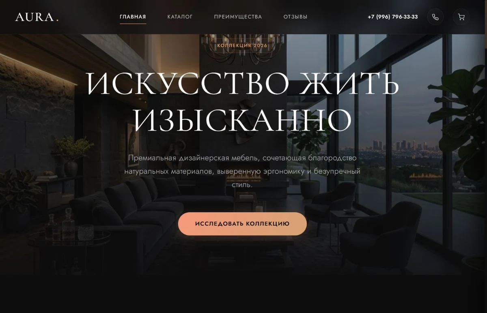
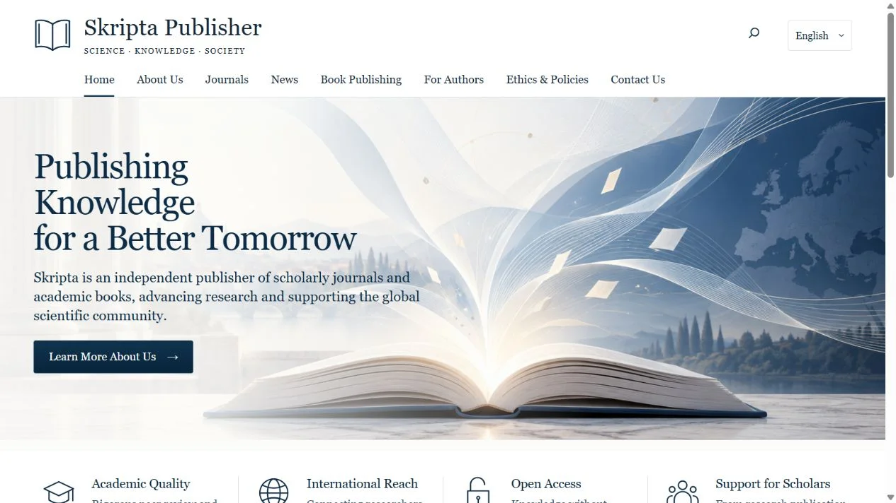

Дизайн + код + здравый смысл
Сайты, боты
и всё, что
между
Превращаю «а можно сделать так?»
в красивый и работающий продукт.
Для бизнеса. Для людей. Для вашей идеи.

От первого «привет» до запуска.
01 / Избранное и не только
Меньше обещаний.
Больше вот, смотрите.
Разные задачи. Разный характер.
В каждом проекте — свой ответ.
Клиентская работа и дизайн-концепты.
WORDPRESS / MULTILINGUAL
Skripta
Publisher.
Европейское издательство.
Три языка. Один удобный сайт.
Полностью редактируется в WordPress

Ahoj.
Привет.ОТКРЫТЬ САЙТ ↗
02 / Чем могу помочь
Есть задача?
Найдём ей форму.
От первой страницы до системы,
которая связывает всё вместе.
Сайты с характером
Лендинги, каталоги, корпоративные сайты. Дизайн под задачу и WordPress, в котором вы сами меняете контент.
/ 02Telegram-боты
Принимают заявки, отвечают на вопросы, помогают с записью. Ваш сценарий — внутри привычного мессенджера.
/ 03Mini Apps & Web Apps
Когда кнопок в боте мало: личные кабинеты, интерактивные сервисы и приложения прямо в Telegram.
/ 04Рутина — на автопилот
Связываю сайт, CRM, таблицы и сервисы. Чтобы данные попадали куда нужно без вечного «скопировать — вставить».
Не знаете, что именно нужно? Начнём с того, что хочется упростить.
03 / Давайте знакомиться
Привет,
я Александр.
Люблю, когда красиво.
Ещё больше — когда работает.
Занимаюсь сайтами, ботами и автоматизацией. Мне интересно пройти весь путь: разобраться в задаче, придумать интерфейс, написать логику и довести до запуска.
Со мной можно говорить обычными словами. Вы рассказываете, что нужно бизнесу, — я помогаю превратить это в понятное техническое решение.
Использую современные AI-инструменты, чтобы быстрее проверять идеи, автоматизировать рутину и уделять больше времени дизайну и качеству. Решения, проверка и ответственность за результат — на мне.
04 / Как всё происходит
Без потерянных
сообщений и сюрпризов.
- 01
Обсуждаем
Задачу, аудиторию и желаемый результат. Фиксируем объём, сроки и стоимость на Kwork.
- 02
Собираем
Структуру, дизайн и рабочую версию. Показываю результат по ходу, согласуем детали.
- 03
Запускаем
Проверяем на разных экранах. Публикуем, передаю проект и объясняю, как им пользоваться.
05 / Начнём с «привет»
ХОРОШИЕ ПРОЕКТЫ НАЧИНАЮТСЯ С РАЗГОВОРАА что, если
сделать?
Расскажите об идее. Даже если пока
это три предложения и ссылка на «вот такое».
Ваша идея.
Наш следующий проект.
Обсудим детали в переписке и зафиксируем договорённости в заказе.
Перейти на Kwork